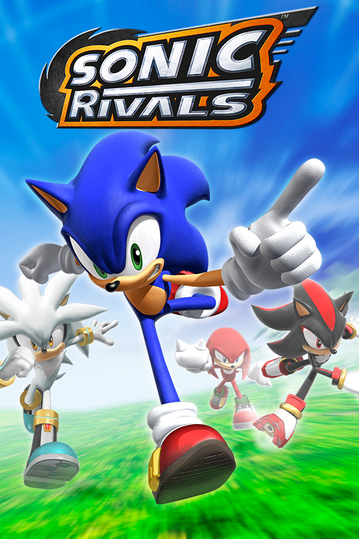

Sonic Rivals
Sonic Rivals
Details
|  | |
| Playtime | Not Played |
| Last Activity | Never |
| Added | 4/29/2025 5:00:18 |
| Modified | 4/29/2025 8:36:32 |
| Completion Status | Not Played |
| Library | Playnite |
| Source | |
| Platform | Sony PlayStation Portable |
| Release Date | 11/21/2006 |
| Community Score | 56 |
| Critic Score | 64 |
| User Score | |
| Genre | Action Racing |
| Developer | Backbone Entertainment Sega Studio USA |
| Publisher | SEGA |
| Feature | Multiplayer Single Player |
| Links | Wikipedia GameSpot interview with Takashi Iizuka |
| Tag | [People] artist: Ryan Slemko [People] composer: Chris Rezanson [People] director: Takashi Iizuka [People] producer: Taylor Miller [People] writer: Takashi Iizuka |
Description
Sonic Rivals is a 2006 action-racing video game developed by Backbone Entertainment and Sega Studio USA, and published by Sega for the PlayStation Portable (PSP); it is a game in the Sonic the Hedgehog series, and follows the heroes needing to stop Doctor Eggman Nega from turning everyone and the world into cards. The gameplay involves racing against other characters to get to the goal before them, as well as defeating the boss before the opponent does.
Development on Sonic Rivals originated from a traditional platform game Backbone was developing, before Sonic series producer Takashi Iizuka stepped in and changed its direction, as well as deciding on the PSP as the system it would release on due to having greater processing power than the Nintendo DS; the developers also took inspiration from the Sega Genesis games, as well as other games up to Sonic Rush (2005) due to wanting to return to the 2D gameplay style.
Sonic Rivals released in North America in November 2006, and other territories in December; it is one of the few games in the franchise not to see a release in Japan. Upon release, it was a commercial success, but received generally mixed reviews from critics, who praised the graphics and audio, while the gameplay drew mixed reactions for its controls, level design, and rubber banding. A sequel titled Sonic Rivals 2 was released in 2007 for the same system, and handled by the same developers.
Gameplay
Sonic Rivals is a side-scrolling video game similar to the original Sonic the Hedgehog games for the Sega Genesis, but with a 2.5D perspective. Characters race to the finish line while avoiding the level's obstacles. The game contains six zones, each with three respective acts, the third being a boss battle, totaling in 17 stages. Boss battles at the end of levels require the player to defeat the boss before the competing character does. Five different characters are playable; Sonic the Hedgehog, Knuckles the Echidna, Shadow the Hedgehog, Silver the Hedgehog, and Metal Sonic, but gameplay is identical for all characters. The game features power-ups to collect that offer additional offensive and defensive abilities.
Sonic Rivals features several different modes. In Story Mode, each of the four playable characters have separate story lines, and must race each other to the finish line in each stage in order to thwart Doctor Eggman's various schemes. In Challenge Mode, the player is given a goal to complete, such as hitting their opponent a certain number of times during a race or battle. Wireless Play Mode features multiplayer games and races whereby players can wager cards, or just race for fun. It is played ad hoc, and players can customize their racers using collectible cards won in Single player, trade cards with friends, and wager cards on races. Also a cup circuit mode is available where players race a rival for the chance to win a specific cup.
The game includes an extensive collectible card system that spans a total of 150 cards. Performing specific objectives throughout the game will give the player a collectible cards. Such tasks include finishing a level, getting a certain number of rings, hitting a rival a certain number of times and getting to the goal within a certain amount of time. The cards themselves feature pictures of characters and boxart from a variety of past games in the Sonic series. The cards themselves are used to unlock secret costumes and items that alter the appearance of the characters. While they add a customizable aspect to the game, they are merely aesthetic; they do not affect gameplay.
Plot
When the mysterious Onyx Island appears out of nowhere, Sonic and Tails fly there to investigate. They confront Doctor Eggman, who reveals his latest device: a camera which can turn people and things into cards, having already done so to Amy. He turns Tails into a card just as Knuckles arrives, angry at Eggman for using his device on the Master Emerald as well. Eggman announces his plan to conquer the world by turning everything to cards, challenging Sonic and Knuckles to stop him as he flees. The two heroes both set out independently to stop his plan. Elsewhere, Shadow receives a distress signal from Eggman, but upon finding him, the doctor denies sending one. He later receives a communication from Rouge warning him she has stumbled upon a dangerous secret about Eggman, but she is turned to a card before she can continue. Suddenly, Silver appears from the future, and tells Shadow he needs to get to Eggman first.
After numerous conflicts, the heroes discover that Dr. Eggman had been imprisoned in a card before everything began, and that the Eggman the heroes have been interacting with is Eggman Nega in disguise. Nega is revealed to have traveled back from the future, plotting to use the camera to remove Eggman's failed schemes from existence and rewrite their family history, with Onyx Island being a future version of Angel Island he brought back to further his plan. His ruse exposed, Nega escapes into space, planning to use his camera to turn the whole planet into a card. The heroes rescue Tails and the real Eggman, who aid them in reaching Nega's space station to stop his plan. After a final battle with the heroes, Nega is defeated and captured in a card. The prisoners of the other cards are restored, and Silver takes Onyx Island and Nega's card with him back to the future.
Development and release
Sonic Rivals was developed as a collaborative effort between Sega and Backbone Entertainment for the PlayStation Portable (PSP). The game's concept originated from a traditional platform game Backbone designed. Takashi Iizuka became involved with the game, and he changed its direction to a racing game. The majority of development was handled by Backbone with assistance from Sega Studio USA, although some aspects, such as the story, were done by Sega. The developers chose to create the game on the PSP over the Nintendo DS, due to its stronger processing power and higher graphical quality.
According to producer Taylor Miller, the goal of the developers was to return to the gameplay style of the original Sega Genesis Sonic games, but with new elements such as competition. In designing the stages, Sega provided Backbone with level design maps from all the 2D games as a reference, and Backbone looked to all games up to Sonic Rush for inspiration. Building alternate paths—a common feature of the original games—was cited as challenging, with the goal of allowing as many rivalry interactions as possible. In choosing playable characters, Backbone focused on characters who maintained the biggest rivalries in the Sonic franchise, such as Sonic and Shadow. Silver, then a new character, was added to "mix things up". One challenge was coming up with the art direction for the game; Backbone sought to maintain the look and feel of Sonic while still stylizing the game to stand out. Kazuyuki Hoshino and Hiroshi Nishiyama assisted with art and environment direction, respectively.
The game's existence was revealed on GameStop's website in May 2005, though Sega denied it was in development. Sonic Rivals was announced on May 6, 2006. It was showcased at the Electronic Entertainment Expo (E3) later that month, and at the Games Convention in August 2006. The game was released in North America on November 17, 2006, and Europe on December 1, 2006.
Reception
Sonic Rivals received "mixed or average" reviews from critics, scoring a 64/100 on Metacritic, and 66.17% on GameRankings. Both it and Rivals 2 were later re-released in North America and Europe as part of the Greatest Hits and Essentials lines respectively, indicating over 250,000 units were sold by the end of 2007, as well as part of the Double Rivals Attack Pack! on October 18, 2011.
Reviewers consistently praised the game's presentation. Juan Castro of IGN wrote that the game had tons of "graphical flourishes" that made it belong on the handheld, a sentiment shared by Greg Mueller of GameSpot. The music received similar praise, with GameSpot finding the music upbeat, although GameSpy said it was "nowhere near as good" as previous games in the series.
The gameplay, however, drew mixed reactions; a common critique was the game's rubber banding mechanic making the opponent close to the player no matter how fast they were travelling. GameSpot said "if you freeze your rival with an ice blast, he will be slowed momentarily but will inexplicably catch up within seconds", while GameSpy felt there was never a moment where it was impossible to catch up to them. Rob Fahey called it "one of the most blatant and annoying instances of rubber-banding AI we've ever seen" in his review for Eurogamer.